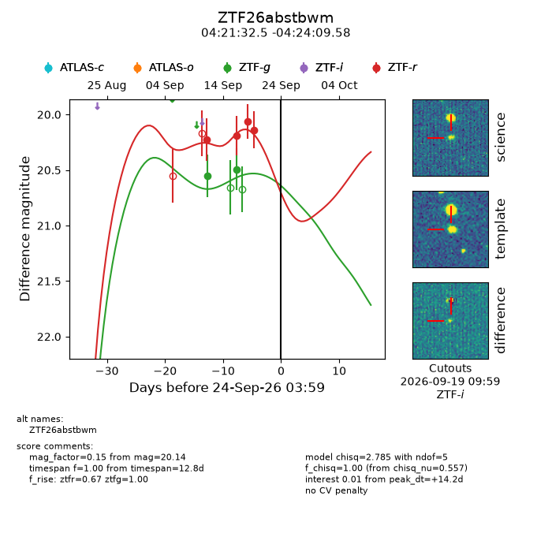
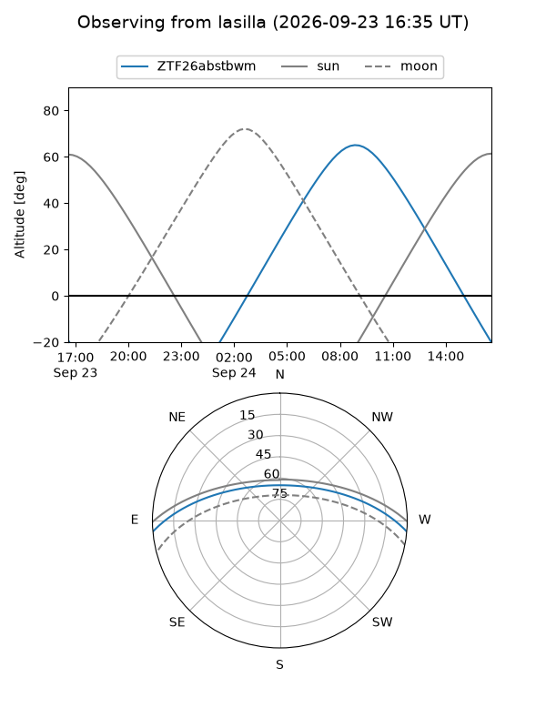
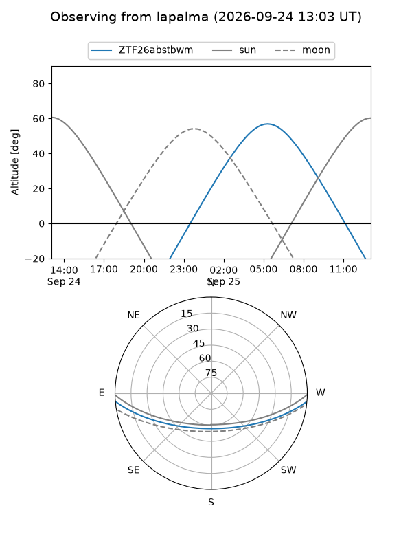
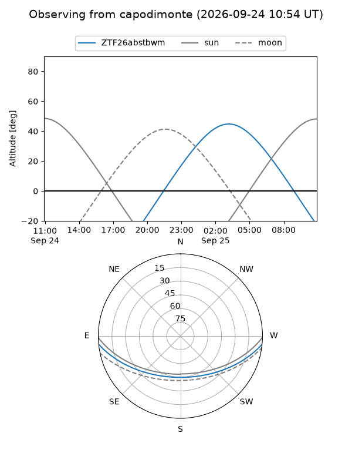
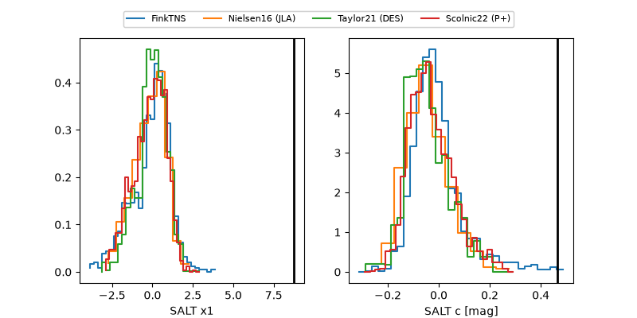

ZTF26abstbwm
Target ZTF26abstbwm at 2026-09-24 15:53
Aliases and brokers:
FINK-ZTF: ztf.fink-portal.org/ZTF26abstbwm
Lasair-ZTF: lasair-ztf.lsst.ac.uk/objects/ZTF26abstbwm
ALeRCE-ZTF: alerce.online/object/ZTF26abstbwm
Direct TNS query: direct search
alt names
ZTF26abstbwm (ztf,fink_ztf)
Coordinates:
equatorial (ra, dec) = 65.3854,-4.40266
equatorial (HMS+DMS) = 04:21:32.50,-04:24:09.58
galactic (l, b) = (198.1850,-35.09099)
Flags:
peak dt: +14.7
Photometry:
last ztfg=20.49, ztfr=20.14
2 ztfg, 4 ztfr detections
Lightcurve

Visibility



Additional plots
